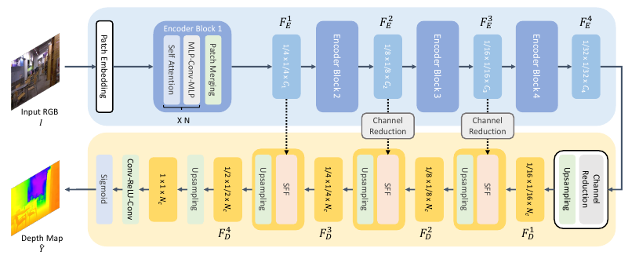

ICIP 2023
Training Cartoonization Network without Cartoon
Learning to cartoonize photographs through regions and edges, without a collected cartoon training dataset.
Research
Work on efficient networks, knowledge transfer, continual learning, and visual generation.
* Equal contribution. Preprints and published versions are listed once. ICPR 2020 was held in January 2021.

Learning to cartoonize photographs through regions and edges, without a collected cartoon training dataset.
Examining how the choice of baseline changes pruning evaluations, and proposing evaluation across multiple baselines.
Pruning redundant feature maps using linear approximation and compensating for their removal through weight modification.
Combining global context and local detail for depth estimation from a single image.
Making networks smaller by removing filters that other filters can approximate, then compensating for the removed weights.
Enabling channel pruning in both the residual blocks and shortcut connections of ResNet.
Connecting encoder and decoder representations to improve monocular depth estimation.
Accounting for batch normalization in curvature approximation to retain knowledge when learning new tasks.
Balancing old and new tasks through network reparameterization without increasing network size.
Progressively training a generator from individual frames to text-conditioned video.
Generating an image that combines the identity of one input with the shape of another, without paired supervision.
Allowing more flexible feature-map sizes through non-integer strided sampling.
Transferring relationships between intermediate features to support training, network compression, and transfer learning.
Publication metadata checked against papers, publisher records, and institutional records on 8 October 2026.